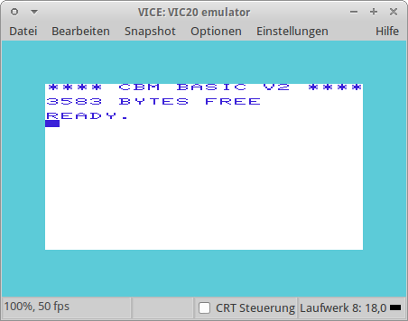
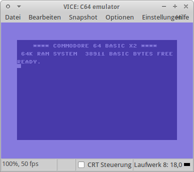
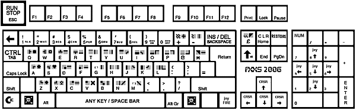

VICE
Dieser Artikel wurde für die folgenden Ubuntu-Versionen getestet:
Ubuntu 16.04 Xenial Xerus
Ubuntu 14.04 Trusty Tahr
Zum Verständnis dieses Artikels sind folgende Seiten hilfreich:
VICE (VersatIle Commodore Emulator) ist ein Emulator, der verschiedene Computersysteme des Unternehmens Commodore emuliert. In der aktuellen Version unterstützt er den Commodore 64, den C64 DTV, den Commodore 128, den VC 20, alle PET-Modelle, den PLUS4 sowie den CBM-II (C610).
Die Ursprünge des Programmes liegen in x64, einem 1993 veröffentlichten Emulator für das X-System.
Installation¶
Paketquellen¶
Folgende Pakete müssen installiert [1] werden:
vice (multiverse)
 mit apturl
mit apturl
Paketliste zum Kopieren:
sudo apt-get install vice
sudo aptitude install vice
Quellcode¶
Um die neuste Version kompilieren zu können, muss die Paketquelle für den Quellcode freigeschaltet sein [2].
Im Terminal [2] lädt man sich nun mittels
sudo apt-get build-dep vice
die notwendigen Pakete für die Kompilierung herunter.
Nun von der Homepage  das Quellcodepaket vice-VERSION.tar.gz herunterladen und kompilieren [4]. Wünscht man eine volle graphische Benutzeroberfläche, bei der sich beispielsweise auch die Tasten für den simulierten Joystick einstellen lassen, sollte die Kompilierung mit der folgenden Option erfolgen:
das Quellcodepaket vice-VERSION.tar.gz herunterladen und kompilieren [4]. Wünscht man eine volle graphische Benutzeroberfläche, bei der sich beispielsweise auch die Tasten für den simulierten Joystick einstellen lassen, sollte die Kompilierung mit der folgenden Option erfolgen:
./configure --enable-gnomeui
|  |
| Commodore VC 20 |
Installation von Commodore ROM Dateien¶
Bei der Linux-Version von VICE fehlen die für den Betrieb notwendigen ROMs einzelner Commodore Maschinen. Lediglich der C64 ist nach der Installation verwendbar. Für die anderen ROMs das Archiv der Windows-Version unter vice-emu.sourceforge.net herunterladen.
Das Archiv in ein beliebiges Verzeichnis extrahieren [3]. Anschließend die Verzeichnisse
C64
C128
CBM-II
DRIVES
PET
PLUS4
PRINTER
VIC20
nach ~/.vice kopieren. Dieser Ordner muss ggf. noch angelegt werden.
Hinweis:
Bei der Verwendung der ROMs ist das Urheberrecht des jeweiligen Landes zu beachten.
C64¶
Um lediglich den C64 nutzen zu können, kann man die benötigten ROM-Dateien von Frodo nutzen. Hier lädt man sich das Programm Frodo herunter und entpackt [3] dieses. Nun im Homeverzeichnis den Ordner .vice/C64 anlegen. In dieses die folgenden Dateien hineinkopieren und wie vorgegeben umbenennen:
| Dateinamen | |
| Ursprungsname | neuer Dateiname |
| 1541 ROM | dos1541 |
| Basic ROM | basic |
| Char ROM | chargen |
| Kernal ROM | kernal |
Der C64-Emulator kann mit dem Befehl x64 gestartet [5] und sofern gewünscht ein Menüeintrag [6] vorgenommen werden.
Programmstart¶
VICE ist eine Sammlung von Emulatoren. Um den gewünschten Emulator zu starten, müssen folgende Befehle in ein Terminal [1] eingegeben werden:
| Startbefehle | |
| Startbefehl | Commodore |
x64 | Commodore C64 |
x128 | Commodore C128 |
xpet | Commodore PET |
xcbm2 | Commodore CBMII |
xplus4 | Commodore PLUS4 |
xvic | Commodore VIC |
Einstellungen¶
VICE stellt verschiedene Menüs zur Verfügung. Diese sind über die Menüpunkte "Datei" ( ) - "Snapshot" und "Optionen" (
) - "Snapshot" und "Optionen" ( ) zu erreichen. Über den Punkt "Disk Image einlegen -> Laufwerk #8" oder alternativ per
Alt +
8 kann man für das erste Laufwerk ein Diskimage auswählen.
) zu erreichen. Über den Punkt "Disk Image einlegen -> Laufwerk #8" oder alternativ per
Alt +
8 kann man für das erste Laufwerk ein Diskimage auswählen.
|  |
| Commodore 64 |
Konfiguration von x64¶
Um die Erfahrungen mit den Emulatoren etwas authentischer zu machen, sollten noch einige Einstellungen vorgenommen werden.
Joystick¶
Angeschlossene USB-Joysticks oder Gemepads können auch mit dem Emulator genutzt werden. Zunächst müssen diese jedoch unter "Einstellungen -> Joystick Einstellungen" aktiviert werden. Das besondere am C64 war seinerzeit, dass unterschiedliche Spiele und Anwendungen oft unterschiedliche Joystick-Ports des C64 angesprochen haben. So kann es sein, dass ein geladenes Spiel vermeintlich nicht auf Eingaben des angeschlossenen Joysticks reagiert.
In den meisten Fällen reicht es daher, einen angeschlossenen Joystick für beide Ports zu aktivieren. Die elegantere Lösung ist allerdings den Menüpunkt "Einstellungen -> Joystick Einstellungen -> Joystick ports austauschen" zu benutzen, der den angeschlossenen USB-Joystick zwischen den emulierten C64-Joystick Ports hin und her tauscht.
Wenn man keinen Joystick hat, kann man über "Joystick Einstellungen -> Joystick in Port 2" alternativ die Funktionen auf den "Ziffernblock" legen oder, falls man keinen hat, auf "Benutzerdefiniert" stellen. Im zweiten Fall werden dann die Tasten W , E , R , S , D , F , X , C , V zum Steuern und zum Feuern benutzt.
Bedienung des Commodore C64¶
Commodore Basic¶
Um mit dem Emulator vernünftig arbeiten zu können, sollte man natürlich wissen, wie man mit dem BASIC-Interpreter des Commodore 64 umzugehen hat. Auch einfache Operationen wie das Laden von Programmen von einem Disketten-Image werden wie früher über das Commodore BASIC getätigt.
Dazu empfiehlt sich die Lektüre des Commodore 64 Handbuches  . Das Handbuch behandelt die Grundlagen der BASIC-Programmierung und vermittelt zudem Befehle für Dateioperationen, um Inhalte zu laden und abzuspeichern. Es handelt sich hierbei um das Original-Handbuch von Commodore. Es ist für Heimanwender bestimmt und daher leicht verständlich.
. Das Handbuch behandelt die Grundlagen der BASIC-Programmierung und vermittelt zudem Befehle für Dateioperationen, um Inhalte zu laden und abzuspeichern. Es handelt sich hierbei um das Original-Handbuch von Commodore. Es ist für Heimanwender bestimmt und daher leicht verständlich.
Software¶
Es gibt viele hardwareseitige Lösungen, um alte C64-Laufwerke wie das Diskettenlaufwerk VC1541 oder eine Datasette am PC zu betreiben. Um ein altes Spiel mittels VICE zum Laufen zu bringen, sind die zu nehmenden Hürden glücklicherweise wesentlich geringer. Im Internet befinden sich zahlreiche Portale, die Disketten- und Datasettenimages zum legalen Download anbieten. Nachdem die Images heruntergeladen und ggf. entpackt worden sind, können diese anschließend im Emulator verwendet werden.
Hinweis:
Es gibt Sammlungen von Homecomputer-Spielen, welche neben der Windows-Version von VICE auch viele Spiele als Vollversion beinhalten. Um an diese zu gelangen muss ggf. der Umweg über Wine gewählt werden.
Laden von Images¶
Über den Menüpunkt "Datei" erreicht man diverse Möglichkeiten, Images von Commodore Datenträgern in den Emulator zu laden. Welchen Punkt man wählt, hängt von der Art des Images ab, das man laden möchte:
| Images | |
| Typ | Beschreibung |
| .d64 | Dateien mit dieser Endung sind Images von Disketten für den Commodore C64 |
| .t64 | Dateien mit dieser Endung sind Images von Bandspeichermedien für den Commodore C64 |
| .VSF | Snapshot-Images von VICE |
Eine ausführliche Liste findet man unter c64-wiki.de  .
.
Die Images werden über den Menüpunkt "Erweiterungsmodul Image einlegen" geladen.
Hinweis:
Die Autostart-Funktion erzeugt oft Fehlermeldungen beim Laden des Images in VICE. Es empfiehlt sich daher, das Image lediglich zu öffnen und es anschließend manuell vom BASIC-Interpreter des Commodore 64 heraus zu starten!
Spielstart¶
Möchte man ein Spiel starten, bindet man zuerst das Diskettenimage ein (siehe oben), lädt danach "wie gewohnt" den Inhalt der Diskette mit
LOAD"$",8 LIST
und lädt/startet das Programm über
LOAD"DATEINAME",8,1 RUN
Tastenkürzel¶
| Tastenkürzel | |
| C64 | Entsprechung in VICE |
| Esc | |
| Bild ↑ | |
| Tab ⇆ | |
Das komplette Tastaturlayout :

Links¶
Handbuch C64
liegt als PDF vorc64.com
- umfangreiches C64 PortalGremlin Graphics World
- Freeware
- Erstellt mit Inyoka
-
 2004 – 2017 ubuntuusers.de • Einige Rechte vorbehalten
2004 – 2017 ubuntuusers.de • Einige Rechte vorbehalten
Lizenz • Kontakt • Datenschutz • Impressum • Serverstatus -
Serverhousing gespendet von